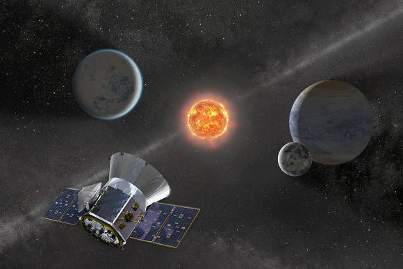

အဲ့သည် အထဲက ကမ္ဘာပျက်မယ့် သီအိုရီ တစ်ခုကတော့ ကမ္ဘာမြေဟာ ဂြိုလ်ကြီး တစ်ခုနဲ့ တိုက်မိပြီး ပျက်စီးရလိမ့်မယ် ဆိုတဲ့ သီအိုရီပဲ ဖြစ်ပါတယ်။ အဲသည်လို အုတ်အော်သောင်းနင်း ဖြစ်နေခဲ့ ပေမယ့်လဲ ကမ္ဘာပျက်မယ် ဆိုတာနဲ့ ပတ်သက်တဲ့ သိပ္ပံ အထောက်အထား ဘာတစ်ခုမှ မရှိခဲ့ပါဘူး။
သိပ္ပံ ပညာရှင်တွေက ဘယ်လို ပြောပြော ကမ္ဘာပျက်မယ် ဆိုတာကို စွဲစွဲမြဲမြဲ ယုံကြည်ခဲ့ကြတဲ့ သူတွေ အများအပြား ရှိခဲ့ပါတယ်။ ၂၀၁၂ သာ ကျော်သွားတယ် ကမ္ဘာလဲ ပျက်မသွားတာ အားလုံး အသိပါ။
အဲ့သည် အချိန်က အင်တာနက်မှာ ဘလော့ဂါ အတော်များများက ဒီ နဘီရူ ဂြိုလ်နဲ့ ပါတ်သက်လို့ နာဆာ အဖွဲ့ကြီးကတောင်မှ သတိပေးချက်တွေ ထုတ်ပြန် ခဲ့တယ် ဆိုပြီး ပြောကြဆိုကြ ရေးကြတာတွေ ရှိခဲ့ပါတယ်။ (ကျွန်တော်တောင်FB ပိုစ့်တွေ တွေ့လို့ ဟုတ်များ ဟုတ်နေလား ဆိုပြီး နာဆာ ဝက်ဆိုဒ်မှာ သွားရှာကြည့်မိပါသေးတယ်)။
ဒါပေမယ့် ဒီ နဘီရူ ဂြိုလ်နဲ့ ၂၀၁၂ ကမ္ဘာပျက်ကိန်းကို ယုံကြည်နေ ကြတဲ့ သူအချို့ (အများကြီးပဲ) ကတော့ နာဆာရဲ့ ပြောစကားကို မယုံကြည် ကြပါဘူး။ သူတို့က အစိုးရတွေက လူတွေ အထိတ်တလန့် ဖြစ်ပြီး ထိန်းမရ ဖြစ်ကုန်မှာ စိုးလို့ အဖြစ်မှန်ကို ဖုံးကွယ် နေတာလို့ စွပ်စွဲကြပါတယ်။
အဲ့သည် အချိန်မှာပဲ တိုက်တိုက်ဆိုင်ဆိုင် အယ်လီနင် ကြယ်တံခွန် (Comet Elenin) ကလဲ ပေါ်လာလိုက်တော့ ဇါတ်လမ်းက ပိုရှုပ်ကုန်ပါတယ်။ ကမ္ဘာပျက် သီအိုရီကို နဲ့ နီဘီရူ ဂြိုလ် ကို ယုံကြည်ကြ သူတွေက ဒီ ကြယ်တံခွန်ဟာ နဘီရူ ဂြိုလ်ကြီး ကမ္ဘာနဲ့ နီးကပ်လာတာ ဆိုပြီး ပြောကြပါတယ်။ အချို့ကဆို ဒီဂြိုလ်ကြီးက ကြယ်တံခွန်ယောင် ဆောင်ပြီး ကမ္ဘာနား ကပ်လာနေတာ လို့တောင် ပြောကြပါတယ် (အဲ့တာကို ယုံတဲ့ သူတွေကလဲ အနောက်နိုင်ငံ တွေမှာကို တပုံကြီးပါပဲ၊ သူတို့လဲ ခပ်ဒူဒူတွေ အများသားဗျ)။

နဘီရူဂြိုလ်ယုံတမ်းရဲ့မူလအစ
နဘီရူ ဂြိုလ်ကြီးရဲ့ မူလအစက ၁၉၇၆ ခုနှစ်က စတာပါ။ အဲ့သည်နှစ်မှာ ဇီချာရီယာ ဆစ်ချွန် (Zecharia Sitchin) ဆိုတဲ့ စာရေးဆရာ တစ်ယောက်က “ဆယ့်နှစ်ခုမြောက် ဂြိုလ် (The Twelfth Planet) ဆိုတဲ့ စအုပ်ကို ထုတ်ဝေလိုက်တာကနေ စတာပါပဲ။ ဒီစာအုပ်မှာ ဆစ်ချွန်က ရှေးဟောင်း ဆူမာရီယန် (Sumerian) လူမျိုးတွေ ရေးသားခဲ့ကြတဲ့ မှတ်တမ်းတွေကို သူ့ဟာသူ ဘာသာပြန် ထားတာတွေကို အထောက်အထား တစ်ခု အနေနဲ့ တင်ပြထားပါတယ်။အမှန်ပြောရရင်တော့ သူဘာသာပြန်တာဟာ အခြား ဆူမားရီးယန်း လူမျိုးတွေ အကြောင်း လေ့လေနေတဲ့ ကျွမ်းကျင်သူ သမိုင်းပညာရှင်တွေ ပြန်ဆိုတာတွေနဲ့ တခြားစီ ဖြစ်နေတာပါ။ ဒါပေမယ့် သူ့သဘောနဲ့ သူ ပြန်ချင်သလို ပြန်ထားတဲ့ အထောက်အထားတွေ ကို အခြေတည်ပြီး နဘီရူ ဆိုတဲ့ ဂြိုလ်ကြီး တစ်ခု ရှိတဲ့အကြောင်း၊ ဒီဂြိုလ်ကြီးဟာ နေအဖွဲ့အစည်းကို နှစ် ၃,၆၀၀ ကြာတိုင်း တစ်ကြိမ် ပတ်လေ့ရှိကြောင်း ရေးသားခဲ့ပါတယ်။
သူ့စာအုပ် ထွက်ပြီး နှစ်ပေါင်း အတော်ကြာတဲ့ အချိန်မှာ အမေရိကန် ပြည်ထောင်စုက ရှေ့ဖြစ်ဟော ဆရာမ တဦးဖြစ်သူ နန်စီ လေဒါ (Nancy Lieder) ဆိုသူက သူမဟာ ဂြိုလ်သားတွေနဲ့ အဆက်အသွယ် ရှိသူဖြစ်ကြောင်း၊ သူမနဲ့ အဆက်အသွယ် ရှိတဲ့ ဂြိုလ်သားတွေက ကမ္ဘာကြီးဟာ အခြား ဂြိုလ်ကြီး တစ်ခုနဲ့ တိုက်မိပြီး ပျက်စီးတော့မှာ ဖြစ်ကြောင်း ပြောကြားခဲ့ပါတယ်။ သူမက တိုက်မိမယ့် ခုနှစ်ဟာ ၂၀၀၃ ခုနှစ်ထဲမှာ ဖြစ်တယ်လို့ ဆိုပါတယ်။
၂၀၀၃ ခုနှစ်သာ ကုန်သွားတယ်၊ ကမ္ဘာကတော့ ဘာဂြိုလ်နဲ့မှ မတိုက်မိသလို ကမ္ဘာလဲ မပျက်သွားပါဘူး။ အဲ့သည် အခါကျတော့ တခါ တိုက်မိမယ့် ခုနှစ်က ၂၀၁၂ ခုနှစ်လို့ ပြောပြန်ပါတယ်။ ပထမ ဘာလို့ ၂၀၀၃ ခုနှစ်လို့ ပြောတာလဲ လို့ သူ့ကိုမေးတော့ အစိုးရတွေ မျက်စေ့လည်အောင် ပြောတာ လို့ ဖြေပါတယ်။ ၂၀၁၂ ဟာ မာယာပြက္ခဒိန် သက်တမ်း ကုန်ဆုံးမယ့် နှစ်ဖြစ်တာကြောင့် အချို့သော သူတွေက ကမ္ဘာကြီး ပျက်မယ့်နှစ် လို့လဲ ပြောဆိုကြပါတယ်။

ဒါပေမယ့် ဒီ ကြယ်တံခွန်ကြီးက ကမ္ဘာကို ဝင်မဆောင့် ပြန်ပါဘူး။ ဒီ့အစား နေနဲ့ အရမ်း ကပ်သွားလို့ အစိတ်စိတ် အမွှာမွှာ ကွဲထွက် သွားပါတယ်။ ဒီကွဲထွက်သွားတဲ့ အစအနတွေဟာ နေအဖွဲ့အစည်းရဲ့ အပြင်ဖက်စွန်း ဒေသ (outer solar system) ဆီကို ဦးတည်ပြီးပြန်လည် ထွက်ခွာ သွားပြီ ဖြစ်ပါတယ်။
နဘီရူနဲ့ပါတ်သက်လို့ဘာအထောက်အထားရှိလဲ
နဘီရူ ဂြိုလ်နဲ့ ပါတ်သက်လို့ ယုံကြည် ထောက်ခံကြသူတွေက ၁၉၈၄ ခုနှစ်က Astrophysical Journal Letters မှာ တင်ပြခဲ့တဲ့ သိပ္ပံ သုတေသန စာတမ်း တစ်စောင်ကို အထောက်အထား အဖြစ် တင်ပြကြပါတယ်။ ဒီစာတမ်းမှာ အာကာသ ကောင်းကင်ကို လေ့လာတဲ့ အချိန်မှာ အရင်က မတွေ့ခဲ့ ဘူးတဲ့ အနီအောက် ရောင်ခြည် ထုတ်လွှတ်တဲ့ ပင်ရင်း မူလ အရင်အမြစ်တွေ တွေ့ရှိရတယ်လို့ တင်ပြထားခဲ့ပါတယ် နဘီရူ ကို ယုံကြည်ကြ သူတွေကတော့ ဒါဟာ နဘီရူ ဂြိုလ်ကြီးကနေ ထုတ်လွှတ်တဲ့ အနီအောက်ရောင်ခြည် ( infrared rays) တွေ ဖြစ်တယ်လို့ အခိုင်အမာ ယုံကြည်ကြပါတယ်။သိပ္ပံ သုတေသန လုပ်ငန်းတွေမှာ ဒီလိုမျိုး တွေ့ရှိချက်တွေက သိပ်မထူးခြားလှတဲ့ ပုံမှန် တွေ့ရှိမှု တစ်ရပ်သာ ဖြစ်ပါတယ်။ ပုံမှန်ဆိုရင် ဒီလိို ရှင်းမပြနိုင်တဲ့ တွေ့ရှိမှုတွေ ရှခဲ့ရင် နောက်ထပ် သုတေသနတွေ ထပ်လုပ်ပြီး အဖြေရှာ ကြပါတယ်။ ၁၉၈၄ ခုနှစ်က သုတေသန ကိုလဲ ဒီလိုပဲ နောက် သုတေသန တစ်ခုနဲ့ အဖြေရှာခဲ့ပါတယ်။ ဒီအခါမှာ ဒီ အနီအောက် ရောင်ခြည် ထုတ်ပေးတဲ့ အရာဝတ္ထုတွေဟာ ဝေးလံတဲ့ အာကာသ ရပ်ဝန်းက ဂလက်ဆီတွေ ဖြစ်နေတယ် ဆိုတာကို တွေ့ရှိခဲ့ကြပါတယ်။ ဘယ်ဂြိုလ်မှ ရှာမတွေ့ခဲ့ ပါဘူး။
နောက်ပြီး နေကို တစ်ပတ်ပတ်ဖို့ နှစ်ပေါင်း ၃,၆၀၀ တောင် ကြာတယ်ဆိုတဲ့ ဂြိုလ်ကြီး တစ်စင်းဟာ နေအဖွဲ့အစည်း အတွင်းမှာ မတည်ငြိမ် မှုတွေကို ဖန်တီးပေးမှာ အသေအခြာပါပဲ။ နေကို ၄-၅ ပတ်လောက် ပတ်ပြီးရင်ကို သူ့ရဲ့ ဆွဲအားက အခြားသော ဂြိုလ်တွေရဲ့ ပတ်လမ်းတွေကို အပြောင်းအလဲ ဖြစ်စေမှာ ဖြစ်ပါတယ်။ အဲ့သည် ဂြိုလ်တွေရဲ့ ဆွဲငင်အားကြောင့်လဲ ဒီ နဘီရူ ဂြိုလ်ကြီးရဲ့ ပတ်လမ်းပေါ်မှာ အပြောင်းအလဲ ဖြစ်လာစေ ပါလိမ့်မယ်။ ဒါပေမယ့် အခုထက်ထိ ကမ္ဘာအပါအဝင် အခြားသော ဂြိုလ်တွေရဲ့ ပတ်လမ်းတွေမှာ သိသာထင်ရှားတဲ့ အပြောင်းအလဲမျိုး ဖြစ်ပေါ်တာ မတွေ့ရှိရ သေးပါဘူး။
နောက်ပြီး သိပ်မကြာမီ ကာလမှာ ကမ္ဘာကို ဝင်တိုက်တော့မယ် ဆိုတဲ့ ဂြိုလ်ကြီး တစ်စင်းကို ကမ္ဘာကနေ မမြင်ရဘူး ဆိုတာ မဖြစ်နိုင်ပါဘူး။ အထူးသဖြင့် တစ်ပတ်ပတ်ဖို့ နှစ် ၃,၆၀၀ ကြာတယ် ဆိုတဲ့ ဂြိုလ်ကြီးဟာ အခုအချိန်မှာ ကမ္ဘာနဲ့ တိုက်မိမယ့် လမ်းကြောင်းပေါ် ရောက်နေပြီဆို ရင် ကမ္ဘာက နက္ခတ်ကြည့် မှန်ပြောင်းတွေနဲ အလွယ်တကူ မြင်နိုင်မှာ ဖြစ်ပါတယ်။ နက္ခတ်ကြည့် မှန်ပြောင်းတွေတင် မကဘူး သာမန် မျက်စေ့နဲ့ ကြည့်ရင်တောင် မြင်ရနိုင်တဲ့ အကွာအဝေးကို ရောက်နေမှာ ဖြစ်ပါတယ်။
နဘီရို ယုဲကြည်သူများကတော့ ဒါဟာ အစိုးရတွေ ပေါင်းစုံ ပူးပေါင်းကြံစည်ထားတဲ့ သတင်း အမှောင်ချထားမှုကြီး ဖြစ်တယ် လို့ ဆိုကြပါတယ်။ ဒါပေမယ့် သူတို့တွေ ဝန်မခံတဲ့ အချက်ကတော့ နိုင်ငံတကာက ထောင်ပေါင်းများစွာသော နက္ခတ် ပညာရှင်တွေဟာ အစိုးရတွေရဲ့ ထိန်းချုပ်မှု အောက်က မဟုတ်ဘူး ဆိုတာပဲ ဖြစ်ပါတယ်။ ဒီ ဂြိုလ်ကို တွေ့ခဲ့ရင် တွေ့တဲ့သူက တွေ့ရှိကြောင်း ကြေငြာမှာ ဖြစ်ပါတယ်။
နဘီရူကနဝမဂြီုလ် Planet Nine လား
အချို့က ဒီ နဘီရူ ဂြိုလ်ကို နဝမမြောက် ဂြိုလ် (Planet Nine) နဲ့ မှားကြပါတယ်။ သိပ္ပံ ပညာရှင်တွေ ရှိတယ်လို့ ယုံကြည်ပြီး ရှာဖွေနေကြတဲ့ နဝမ ဂြိုလ်ဟာ နဘီရူ မဟုတ်ပါဘူး။ နဘီရို ဂြိုလ်နဲ့ ပတ်သက်လို့ ဘာအထောက်အထားမှ မရှိပေမယ့် Planet Nine နဲ့ ပတ်သက်လို့တော့ အထောက်အထားတွေ အများအပြား ရှိပါတယ်။နက်ပ်ကျွန်းဂြိုလ်ပတ်လမ်းရဲ့ အပြင်ဖက်မှာ သေးငယ်တဲ့ ဂြိုလ်သိမ် ဂြိုလ်မွှားလေးတွေ အများအပြား ရှိပါတယ်။ ဒီဂြိုလ်မွှားလေးတွေရဲ့ လမ်းကြောင်းဟာ ပုံမှန် ရှိရမယ့် လမ်းကြောင်း မရှိပဲ သွေဖယ်နေတာကို သိပ္ပံ ပညာရှင်တွေ သတိပြုမိပါတယ်။ ဒီလို ဖြစ်ရတဲ့ အဖြစ်နိုင်ဆုံး အကြောင်းကတော့ ဒီဂြိုလ်သိမ်လေးတွေရဲ့ အပြင်ဖက်မှာ အခြား ဂြိုလ်တစင်း ရှိနေလို့ ဖြစ်နိုင်တယ်လို့ သိပ္ပံ ပညာရှင်တွေက သုံးသပ်ပါတယ်။
သိပ္ပံ ပညာရှင်တွေရဲ့ တွက်ချက်မှု အရ ဒီ နဝမဂြိုလ်ဟာ ကမ္ဘာထက် ၁၀ ဆ လောက် ပိုကြီးပြီး နေနဲ့ ကမ္ဘာ အကွာအဝေးရဲ့ အဆ ၆၀၀ လောက် ဝေးတဲ့ နေရာကနေ နေကို ပတ်နေမယ်လို့ ခန့်မှန်းရပါတယ်။ လက်ရှီ အချိန်မှာ ဒီ Planet Nine ကို ရှာတွေ့ဖို့ နီးစပ်လာပြီလို့ ပညာရှင်အများစု ယုံကြည်ကြပါတယ်။
ဒီနေရာမှာ Planet Nine ဆိုတဲ့ အခေါ် အဝေါ်နဲ့ ပတ်သက်လို့ နဲနဲ ရှင်းပြချင်ပါတယ်။ လက်ရှိမှာ နေအဖွဲ့အစည်း အတွင်းမှာ ဂြိုလ်ကြီး ၈ လုံး ရှိတယ်လို့ လက်ခံထားကြပါတယ်။ ဒါ့ကြောင့် ဒီဂြိုလ်ကို ရှာတွေ့ခဲ့ရင် ဒါဟာ နေအဖွဲ့အစည်းရဲ့ ၉ ခုမြောက် ဂြိုလ် ဖြစ်လာမှာမို့ နဝမဂြိုလ် (Planet Nine) လို့ ခေါ်တာ ဖြစ်ပါတယ်။ ဒါပေမယ့် ယခု အချိန်အထိ ပလူတို ဂြိုလ်ကို နဝမမြောက် ဂြိုလ်အဖြစ် လက်ခံထားကြဆဲ နက္ခတ် ပညာရှင် အများအပြား ရှိပါတယ်။ ဒီ ပညာရှင်တွေကတော့ ဒသမမြောက် ဂြိုလ် (Planet X) ဆိုတဲ့ အခေါ်အဝေါ်ကို ဆက်လက်သုံးစွဲ နေဆဲ ဖြစ်ပါတယ်။
နိဂုံချုပ် အနေနဲ့ ပြောရရင် သိပ္ပံ ပညာရှင်တွေ ရှာဖွေနေကြတဲ့ Planet Nine ဟာ နဘီရူ ဂြိုလ် မဟုတ်ပါဘူး။ Planet Nine ဟာ ကမ္ဘာကနေ အလွန် ဝေးကွာတဲ့ ပတ်လမ်းကနေ နေကို ပတ်နေတာ ဖြစ်ပြီး ကမ္ဘာတဲ့လဲ ဘယ်တော့မှ တိုက်မိစရာ အကြောင်း မရှိဘူး ဆိုတာပဲ ဖြစ်ပါတယ်။
Reference: Nibiru: The Nonexistent Planet